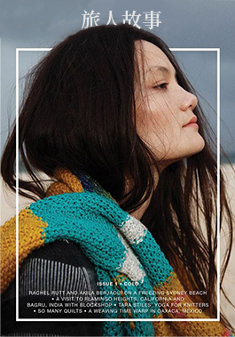

「書可能會過氣，但看書的人可不會」
書實在是一個神奇的東西，當我們在閱讀上個世紀的著作時，居然還會深有同感，而不是大力嘲笑這些落伍的資訊，看來就算經過了好幾年，有些根本的東西還是不會變。
如果你也喜歡看書，那就來聽聽看，我對這些書是怎麼想的吧！
自由自在的空間，讓你在任何時候都有所期待。你可以尋求一個人片刻的沉澱空間， 也可以與同行的夥伴規劃下一段的旅程，當然，只要你願意，都能在這遇見來自世界各地喜愛旅行的人們， 一同交織旅行的酸與甜，共同記錄屬於你們的篇章。
「看照片，讀故事，品人生」
如果你希望多了解我們一點，不如從照片開始吧，每一張照片背後都是許多人的努力才能成就，一起細細品味照片背後的故事。 旅人書店成立至今的點點滴滴，你都可以在這裡找到。
旅人書店是一家提供二手書換宿的書店，我們也會將旅人們的故事撰寫成冊，讓更多人知道，我們希望將這家店打造成旅途中的休憩處，歡迎各位旅人前來。